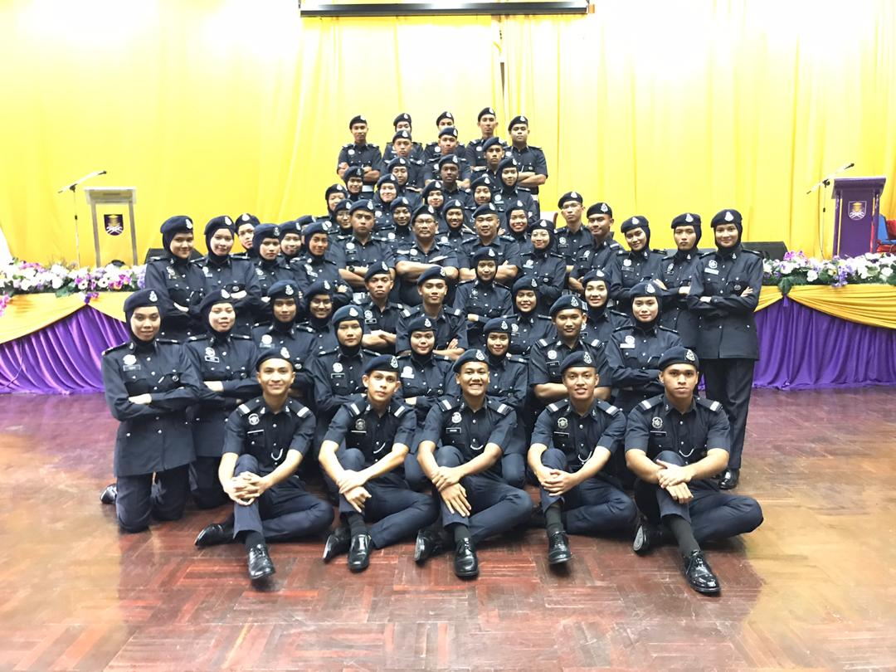
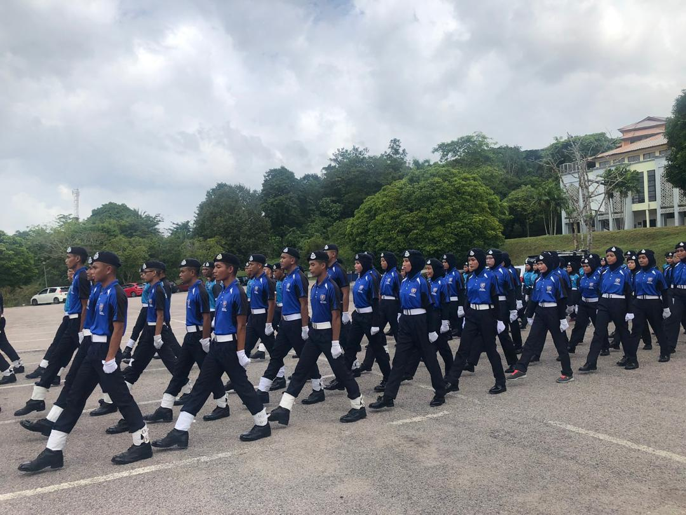
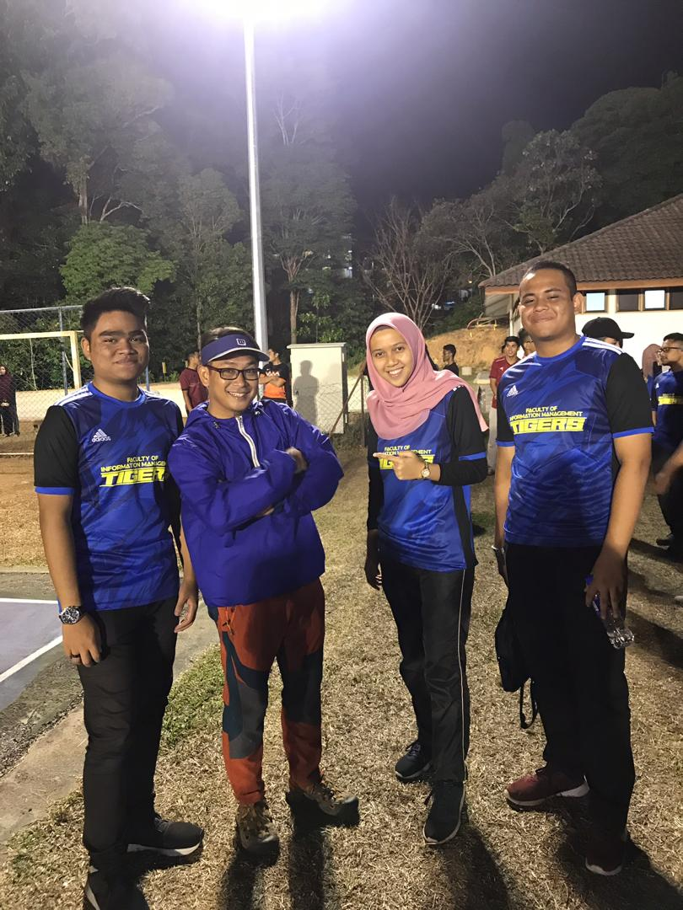

1.Cashier
In 2018. I used to work as a seller at MZ enteprices as a cashier that located in Tanah Merah, Kelantan. it is was my since i have already finished my school. I want to earn some money before I countinue my studies in University i work there in about 3 months. I gain a lot of experiences like managing money and ensure all product in the store are enough and remain available. All of this tasks teach me in management and it make me realised that it is very hard to handle
2.Waiter
In 2018 also, I used to work as a waiter at a restaurant in Kota Bharu, Kelantan. I was responsible in taking orders and serving the food and beverages to customers. The restaurant is called Ashyokk. It is a tiring work because the restaurant always pack with a lot of customers everyday
1.Join SUKSIS
In 2019, I started join SUKSIS(Sukarelawan Polis Siswa Siswi). In the organization, I learn a lot of important valuable lesson and i also gain a lot of sweet memories with all of the SUKSIS members. In the organization, I learn how to be more discipline in myself. i need to learn to be punctual and keep myself neat and always prepare to do something. I also have join many SUKSIS program and activities like marching, shooting, physical exercise and some charity program
 2.Join Saf
I also join SAF(Sukan Antara Fakulti) repesent my faculty that is Information Management or (FPM) in futsal and get third place. It is hard to or team to compete with other faculty since in UiTM Machang have a lot of talented students. We accually proud because we manage to archive third place in futsal.
